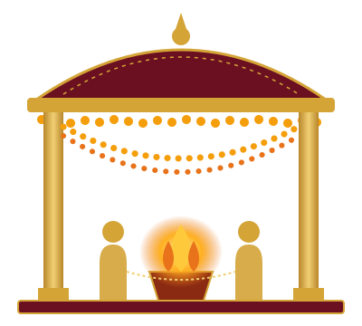

🐘
Ganesh Puja
गणेश पूजा
Invoking Vighnaharta before any new beginning — the first puja of every auspicious work.
1–1.5 hrs॥ सर्वे भवन्तु सुखिनः सर्वे सन्तु निरामयाः ॥
नियति
Every puja and sanskara, performed the Vedic way. Our speciality: traditional Hindu weddings chanted in Sanskrit, with every mantra explained in English, so every guest understands.
🙏 Conducted by Aacharya Varadbhai Bhogayata · UK & India
नियति
ni·ya·ti | noun
Destiny — the sacred order that shapes every life.
हमारा भाव · Our Philosophy
In the Vedic tradition, each sanskara — from naming a child to the sacred wedding fire — is a turning point of life. At Niyati, we perform these rites with devotion, authenticity and clear understanding, so your family receives their full blessing.
पूजा एवं अनुष्ठान
At your home, temple or venue — or online via live video. Puja samagri included, shubh muhurat guidance on every booking.
गणेश पूजा
Invoking Vighnaharta before any new beginning — the first puja of every auspicious work.
1–1.5 hrsसत्यनारायण कथा
Puja and katha of Lord Vishnu for prosperity, gratitude and family well-being.
2–2.5 hrsरुद्राभिषेक
Abhishek of Shiva Linga with Rudri path — for peace, health and removal of obstacles.
2–3 hrsलक्ष्मी पूजा
Diwali and Dhanteras Lakshmi-Ganesh puja for wealth, abundance and auspiciousness.
1.5 hrsगृह प्रवेश
Housewarming with Vastu Shanti, Navagraha puja and havan on the right muhurat.
2.5–3 hrsव्यापार आरंभ पूजा
Ganesh-Lakshmi puja and Kuber pujan for a blessed start to your business.
1.5–2 hrsवास्तु शांति
Pacifying Vastu Purusha and directional energies of a new or renovated home.
2–3 hrsहवन
Sacred fire ceremony with Vedic mantras — Gayatri, Mahamrityunjaya, Chandi and more.
1.5–3 hrsनवग्रह शांति
Puja and japa for the nine planets to reduce doshas in the horoscope.
3 hrsमहामृत्युंजय जाप
Powerful Shiva mantra japa for health, longevity and protection.
As per sankalpनामकरण एवं मुंडन
Naming ceremony and first haircut sanskaras for your little one.
1–1.5 hrsउपनयन / जनेऊ
Sacred thread ceremony — the beginning of Vedic learning and Gayatri diksha.
3–4 hrsसगाई / रोका
Engagement puja with tilak, ring ceremony and blessings of both families.
1–1.5 hrsषष्टिपूर्ति
60th birthday ceremony and renewal of vows with Ayush homa.
3 hrsनवरात्रि / दुर्गा पूजा
Ghatasthapana, Durga Saptashati path and Kanya pujan.
As per sankalpअंत्येष्टि एवं श्राद्ध
Last rites, terahvi, varshik shraddh and Pitru Paksha tarpan — with compassion.
As requiredहमारी विशेषता · Our Speciality
विवाह संस्कार — गृह्य सूत्र पद्धति
A complete wedding according to the Grihya Sutras, with mantras chanted in Sanskrit and every step explained in English (or Hindi / Gujarati). Ideal for UK & NRI weddings, multicultural families and guests new to Hindu traditions.
Each ritual explained, in English.
Sanskrit mantra → its meaning.
Full 3-hour or 60–90 min form.
Gentle guidance for every couple.

Tap a step to read its meaning · अर्थ पढ़ने के लिए क्लिक करें
 १
१For nourishment — may we provide for each other and our home.
२For strength — physical, mental and spiritual, together.
३For prosperity — may we earn and share wealth righteously.
४For happiness — love, respect and harmony with our families.
५For progeny — may we be blessed with noble children.
६For the seasons — a long life together through all of life's seasons.
७For friendship — may we remain lifelong companions.
संक्षिप्त विवाह
60–90 minutes
संपूर्ण वैदिक विवाह
2.5–3 hours
संपूर्ण विवाह उत्सव
Multi-day
षोडश संस्कार
From before birth to the final journey, the Vedic tradition sanctifies every stage of life.

आचार्य जी का परिचय
Aacharya Varadbhai Bhogayata leads Niyati Hindu Religious Work Services, conducting pujas, sanskaras and Vedic weddings for families in the UK and India. Every ceremony is performed according to the shastras, with mantras in Sanskrit and their meaning explained in English, Hindi or Gujarati — so that the whole family can take part with understanding and devotion.
झलकियाँ


प्रक्रिया
Select a puja, sanskara or wedding package.
Date, place, language and family tradition (Gujarati, North Indian, Marathi, South Indian…).
We suggest a shubh muhurat and share the samagri list.
Aacharya ji arrives on time and performs the ritual, explaining as he goes.
आशीर्वाद
Sample reviews — replace with your real client testimonials.
“Our wedding had guests from five countries. Every mantra was explained in English — everyone felt part of it.”— Sample: Priya & James
“Griha Pravesh was done perfectly on muhurat. All samagri was arranged, we didn't have to worry about anything.”— Sample: Patel Family
“The Saptapadi vows explained in simple words made our parents cry with joy. Truly Vedic and truly meaningful.”— Sample: Ananya & Rohan
प्रश्नोत्तर
All mantras are chanted in the original Sanskrit to preserve their sanctity. The meaning of each step is explained in English, Hindi or Gujarati, so guests understand without the ritual losing its authenticity.
Yes, standard samagri is arranged for every booking. For weddings we share a checklist of items the family arranges (mandap, flowers, garlands, sweets, etc.).
Yes. Call or WhatsApp us on +44 7741 922710 (UK) or +91 91730 08338 (India) with your city and date.
Yes. We conduct ceremonies for couples of different backgrounds and can include readings or customs from the other tradition alongside the Vedic rites.
Yes — shubh muhurat selection for every ritual and Guna-milan / kundli matching for weddings.
Yes. Many pujas, havans, jaaps and shraddh can be performed via live video, with the sankalp taken in your name and gotra.
बुकिंग एवं संपर्क
Share your details and we will get back to you with the muhurat, details and samagri list.